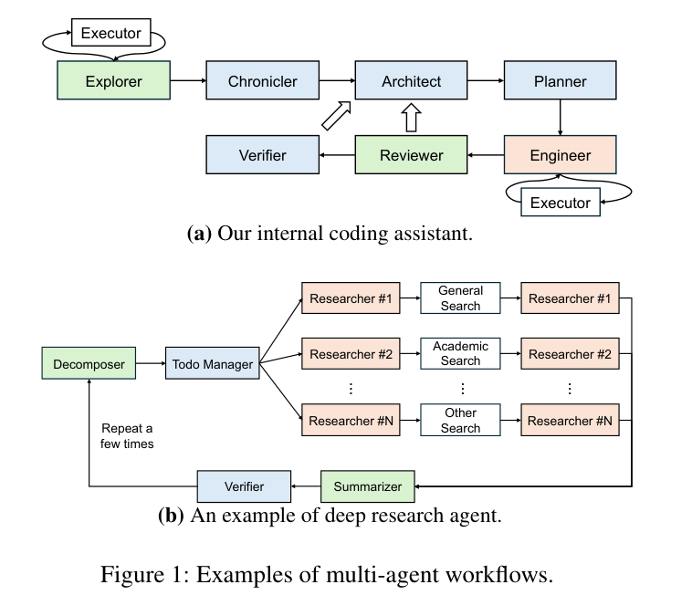
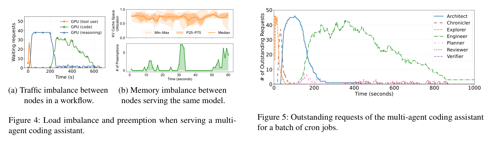
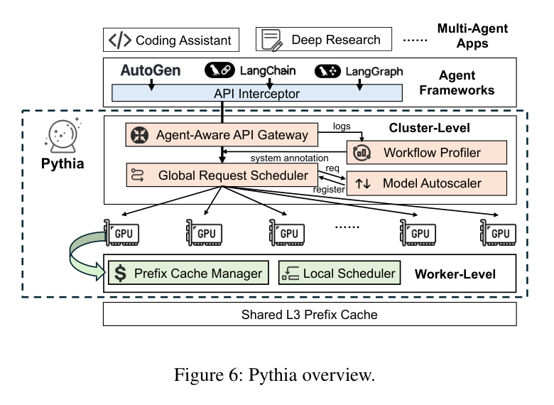
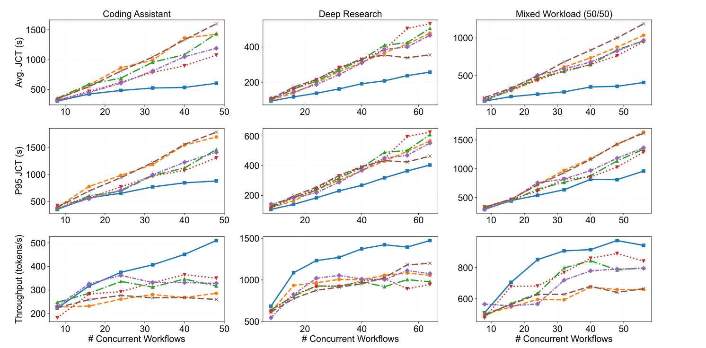

Pythia：Exploiting Workflow Predictability for Efficient Agent-Native LLM Serving
原文：Pythia.pdf
作者：Shan Yu、Junyi Shu、Yuanjiang Ni、Kun Qian、Xue Li、Yang Wang、Jinyuan Zhang、Ziyi Xu、Shuo Yang、Lingjun Zhu、Ennan Zhai、Qingda Lu、Jiarong Xing、Youyou Lu、Xin Jin、Xuanzhe Liu、Harry Xu。
时间与状态：arXiv:2604.25899，首次公开于 2026-04-28；原 Markdown 标注日期为 2026-05-14。
研究层次：面向工作流的集群级缓存、请求调度和 autoscaling。
Motivation
传统 LLM serving 通常把每一条请求视为独立、随机的文本生成任务：请求抵达后才路由，缓存按最近访问时间保留，队列拥塞后才扩容。这个假设对普通聊天较为自然，却不适合生产多 Agent 应用。后者往往由固定角色、系统提示词、工具依赖、有限循环和并行 fan-out 组成；一次执行可以动态分支，但主要路径通常远比开放式对话稳定。

图 1：coding assistant 和 deep research 的多 Agent workflow。角色、循环、并行 fan-out 和工具职责构成可利用的结构信息。
作者对生产 trace 的分析指出，忽略这类结构会同时造成三类问题。
第一，前缀缓存命中率低，Prefill 经常重复执行。 超过 40% 的请求 prefix hit 很低甚至为零。这不是 Agent 没有重复上下文，而是不同角色使用不同的 system prompt；同时，代码执行、搜索等工具会在两个 Agent 调用之间留下较长间隔。等到某个角色再次运行时，它原本的 KV 往往已经被其他请求挤出缓存。被动的 LRU 只依据过去是否刚被访问，无法识别某段上下文在后续工作流中仍有明确用途。
第二，请求大小异构，按请求数调度会引发负载不均。 Planner 可能只输出几十个 token，而 Engineer 可能生成数千 token；它们占用的 KV 容量、执行时间和对下游的影响都不同。仅按队列长度做 FCFS 或 replica routing，会让部分 worker 显存吃紧、发生 preemption，另一些 worker 却仍有空闲资源。被抢占请求需要稍后恢复甚至重算，长请求还可能把短而关键的请求堵在队列后面，形成 head-of-line blocking。
第三，工作流会产生级联突发，而反应式扩缩容来不及。 一个上游 Agent 完成后，可能立即触发多个下游 Agent；论文观察到这种 fan-out 可在一分钟内带来约 50.3% 的负载增长。传统 autoscaler 依据当前队列长度或过去一段时间的平均利用率决策，但模型副本启动本身需要时间，因此常在流量高峰已经到来后才补齐资源。

图 4：生产 trace 中的负载不均、KV utilization 差异和请求抢占，说明仅按请求级策略会浪费显存并增加重算。
Key Insight
Pythia 并不要求准确预知一条工作流的全部未来。它只需从历史执行中得到带置信度的局部预测，并在预测不足时退回传统 reactive 策略。论文认为，生产 Agent 工作流通常能提供以下三类信息。
工作流结构可预测。 角色的转移、循环和并行模式具有稳定的主导路径。知道当前请求所处的位置后，系统可以判断哪些 Agent 的上下文未来仍值得保留、哪些内容已经不可能复用，也可以预估下游将唤醒哪些模型。
负载特征可预测。 Agent 的职责相对固定，因此输出长度与执行时长通常形成可学习的分布。调度器不再把每个请求当作相同大小的任务，而可以根据高置信度的长度上界安排显存容量，并估计请求何时会释放或触发下游工作。
下一提示词的组成可预测。 下一个 Agent 的 prompt 通常由稳定的系统前缀和已经产生的上游结果组合而成。当前一步完成后，系统可以先拼接、分层存放甚至在空闲 GPU 上预填充这段 prompt，从而把一部分 Prefill 延迟隐藏在工作流的等待时间内。
因此，Pythia 的总思路是把“请求到达后再处理”改为“根据工作流局部未来提前准备”，分别作用于缓存、调度和扩缩容。难点有两个：如何在不过度增加应用负担的前提下获得工作流信息，以及如何让错误预测的代价受控。
Core Design
系统总览：先学习，再消费预测
Pythia 只要求 OpenAI-compatible API 的 extra_body 携带三个标识：workflow_type_id 标识应用类别，workflow_id 标识一次执行或会话，agent_id 标识当前角色。应用不需要手写完整 DAG，也不需要直接指定缓存和调度策略；这些标识可由 Agent 框架或接入层统一注入。
Gateway 中的 Workflow Profiler 异步消费 request/response log，学习工作流结构、输出长度分布和 prompt composition。它先形成 Probabilistic Finite Automaton，再把主导路径综合为能表达并行、循环和可选分支的正则表达式。例如：
planner → explorer||3, 4 → engineer3, 6 → reviewer → (engineer2, 4 → reviewer)? → verifier.
其中，Explorer 会并行 fan-out 3–4 个实例，Engineer 迭代 3–6 次，Reviewer 后可能出现一次受限返工。低于 5% 的罕见转移会被过滤；输出长度采用高置信上界，例如 P99。对于新上线或统计不足的 workflow，系统保留 reactive fallback，而不是基于不稳定样本激进预取或预留容量。

图 6：Pythia 在 gateway、cluster 和 worker 三层使用 workflow 信息，连接 profiler、global scheduler、autoscaler、prefix cache 和 local scheduler。
图 6 可以将 Pythia 理解为两部分：入口侧把历史轨迹转成“长度上界、后续路径、prompt 组成”三类标注；服务侧消费这些标注，分别执行推测式缓存管理、前瞻式请求调度和阶段自适应扩缩容。
三项核心机制：如何把预测稳妥地转成收益
1. 推测式缓存管理：保留将要复用的，提前释放已经无用的
传统缓存淘汰只看过去的访问时间；Pythia 更接近受限的 Belady 思路，即利用预测的未来路径判断一个 KV block 是否还会被使用。Cache manager 从 predicted_path_regex 中解析后续节点，再检查每个 block 的 lineage。
当一个请求完成时，后续路径中已经不可能再次出现的 transient 或 dead token 可以立即释放，不必等到 LRU 在显存压力下被动淘汰；后续仍可能使用的前缀则被保留，并可转入共享 L3。这样既释放了无用显存，也避免缓存只能绑定原 worker。
对于下一个 Agent，系统根据 prompt_composition 在 L3 shared cache 或 L2 host DRAM 提前组装 exact prompt。若缓存缺失且 GPU 处于空闲状态，才会发起后台 Prefill。预测结果优先停留在 L2，而不是直接占用稀缺的 HBM；这使错误预测通常只带来较低层级的空间或带宽开销。
2. 前瞻式请求调度：按容量安全路由，再按工作流价值排序
Pythia 将调度拆成集群级和 worker 级两层。首先，Profiler 为请求 ri 给出高置信输出长度上界 ui，满足：
P(Li > ui) ≤ αi.
容量为 C 的 worker 只有在下式成立时才接收新请求 R：
∑ri ∈ active ∪ {R}ui ≤ C.
由 union bound 可得 Poom ≤ ∑iαi。直观地说，系统不是看“这个节点还有几个请求”，而是看“这些请求在保守估计下是否仍装得下”。路由器先过滤不满足容量约束的节点，再选择预计剩余空间最大的节点；若多个节点同样安全，则优先选择已持有目标 prefix 的节点，以兼顾负载均衡与缓存命中。
第二步是全局优先级。Pythia 同时奖励两类请求：一类离工作流终点更近，完成后可缩短整个任务的 JCT；另一类能尽快解除下游模型的空闲。论文将二者写为：
$$S_{completion}=\frac{1}{E[D_{remain}]},\qquad S_{unblock}\mathrel{+}=\frac{1}{E[D_m]},$$
base_priority = ω1Scompletion + ω2Sunblock.
请求到达 worker 后，local scheduler 每轮重新排序，并加入 aging，避免早期 Agent 长期得不到执行。显存仍不足时，系统抢占动态优先级最低的请求并放回全局队列。这套设计的目标不是单纯偏爱短请求，而是在缩短整体完成时间的同时维持关键路径的连续性。
3. 阶段自适应扩缩容：沿着工作流前沿准备副本
传统 autoscaler 对当前队列作出反应；Pythia 则在预测窗口 H 内投影活跃请求的正则路径，统计即将出现的 Agent 和对应模型负载。当上游节点即将 fan-out 时，系统会提前启动可能被唤醒的模型副本；真正的请求洪峰抵达时，副本已处于可服务状态。
缩容也使用相同的信息：已经离开当前执行前沿、短期内不会再被触发的模型停止接收新请求，待现有请求 drain 后再回收资源，而非机械等待固定 keep-alive 时间。这样扩缩容对齐的是工作流 wavefront，而不是带明显滞后的平均队列长度。
Pythia 基于 SGLang 实现：Profiler 与 global scheduler 接入控制面，speculative cache 接入分层缓存，local scheduler 在每轮动态重排，L3 使用 Mooncake；vLLM baseline 通过 LMCache 接入同一 L3。论文的价值主要在于控制逻辑，底层缓存和 serving engine 可以替换，但迁移需要相应工程适配。
Evaluation
收益来自不同负载阶段的不同机制
实验使用两台 AMD EPYC 7J13、1.7 TB DRAM、8 张 A100 80 GB NVLink。基线包括 vLLM Production Stack 0.1.10、SGLang 0.5.9、重实现的 Autellix、Continuum，以及调整为每模型一个 queue 的 ThunderAgent。工作流来自内部 coding assistant 和 Deep Research Agent，并迁移到 AutoGen；benchmark 为 SWE-bench Pro 和 Deep Research Bench。为适配实验设备，生产 trace 中的 frontier model 映射到 Qwen/Llama 3B–14B，TP 为 1–4。主要指标是平均 JCT、P95 JCT 与吞吐。

图 7：不同并发 workflow 下的平均 JCT、P95 JCT 和吞吐；Pythia 在三类 workload 中保持更低延迟和更高吞吐。
在峰值并发下，Pythia 将平均 JCT 降低 1.38–2.9 倍，P95 JCT 降低 1.15–2.02 倍，吞吐提高 1.12–1.96 倍。低负载时，主要收益来自推测式缓存将部分 Prefill 隐藏在等待时间中；高负载时，收益更多来自全局仲裁减少异构工作流造成的 head-of-line blocking。P95 没有因近似 SRTF 策略显著恶化，原因是能够解除下游空闲的上游请求会获得额外优先级，而 aging 防止了长期饥饿。
在 Deep Research 工作流中，semantic keep/drop 先释放 dead transient token；再开启 L2/L1 speculative prefetch 后，Decomposer 的 TTFT 可从约 4.1 s 降至约 1.4 s。论文在某些特定场景中报告最高约 25.5 倍的相对改善。共享 L3 还降低了 worker affinity：后续请求不必为了复用 prompt 被强行路由回原节点。
Limitations
Pythia 适合少数几类、主导路径相对稳定的生产 Agent 工作流。它依赖应用或框架提供 workflow/session/agent metadata，也依赖足够历史数据来学习路径和长度分布。新 workflow、工作流版本变化和输出分布漂移都会造成短期失准；完全开放、强随机或对抗性的流程会让正则模型退化，因此应进入 reactive fallback。
论文当前的优化目标主要是平均 JCT 和吞吐，尚未系统解决多租户公平性、单个 workflow 的 P99 SLO 与 starvation。内部 coding trace、生产搜索 API 和完整模型映射也未完全公开，公开 benchmark 因而不能独立复现全部生产结果。与 KVFlow 相比，Pythia 不只做 KV 调度，而是把 workflow 信号送入缓存、路由、local scheduler 和 autoscaler；与 CacheScout 相比，它的覆盖范围更广，但也更依赖显式元数据和相对稳定的工作流结构。